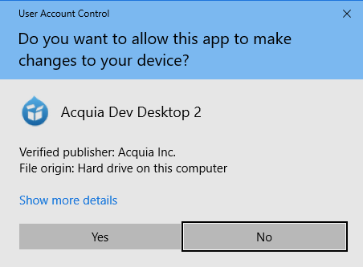

Installeer Drupal op je computer¶
Om Drupal te kunnen gebruiken op je eigen computer of laptop zijn er een aantal stappen nodig:
- Er moeten een webserver en databaseserver op je systeem geïnstalleerd worden.
- De Drupal 8 bestanden moeten geïnstalleerd worden.
- Drupal 8 moet zijn eigen database installeren.
We werken bij Drupal in a Day met de Acquia Dev Desktop. In dit hoofdstuk vind je instructies voor het installeren van de Dev Desktop op zowel Windows als Mac. Maak je gebruik van een ander systeem, bijv. Linux, dan kun je gewoon meedoen met het cursusgedeelte van Drupal in a Day, maar je bent wel op jezelf aangewezen voor het installeren van de benodigde software. Grofweg zijn de bovenstaande drie stappen hetzelfde. Heb je eenmaal een webserver en database draaiend en heb je de Drupal-distributie voor Drupal in a Day gedownload, dan zijn de stappen voor het installeren van Drupal ook gelijk en kun je verder bij de sectie Drupal downloaden en klaarmaken voor installatie.
Ook als je wel een Mac of Windows-machine hebt, maar gebruik maakt van een andere oplossing om PHP-sites te draaien, dan kun je daar in principe gebruik van maken. Echter ben je ook dan op jezelf aangewezen bij eventuele problemen die daaruit voortvloeien. Het is het overwegen waard om Dev Desktop naast je eigen oplossing te installeren. Dev Desktop installeert zijn componenten op een aparte locatie en gebruikt geen standaard poorten, dus het is goed mogelijk om het te installeren naast andere oplossingen.
De Acquia Dev Desktop kun je downloaden op de download-pagina van het Acquia Developer Center. Kies voor Mac Download of Win Download, afhankelijk van het systeem waar je het op gaat installeren.
Web server en database installeren¶
Hieronder vind je het installatieproces van de Acquia Dev Desktop voor Mac en Windows. De installatieprocedure is vrijwel gelijk voor Mac en Windows. Als er afwijkingen zijn zullen we die benoemen. De screenshots zijn gemaakt op een Mac die draait op macOS High Sierra. Gebruik je een andere versie, of gebruik je Windows, dan zullen de schermen er iets anders uit zien.
Starten van de Installer¶
De eerste stappen om de installatie te starten zijn op Mac en Windows iets anders.
Mac¶
Als de download klaar is open je het bestand (disk image).

Dubbelklik nu op het blauwe icoontje genaamd Acquia Dev Desktop Installer om de installer te starten.
Waarschijnlijk krijg je nu een waarschuwing te zien dat het bestand afkomstig is van een voor Apple onbekende ontwikkelaar.

Krijg je deze waarschuwing te zien, dan klik je deze eerst weg door op OK te klikken. Hierna open je Systeemvoorkeuren (System Preferences), bijvoorbeeld door te klikken op het Apple-logo linksboven in de menu-balk en de betreffende optie te kiezen in het dropdown menu. Hier kies je voor Veiligheid & Privacy (Security & Privacy).
Daar vind je je onder het tabje Algemeen (General) een tekst die aangeeft dat Acquia Dev Desktop geblokkeerd is. Ernaast staat een knop om de installer alsnog te starten. Klik op die knop.

Je krijgt nu nogmaals een waarschuwing, maar nu kun je Open kiezen. Je Mac zal je enkele keren vragen om je wachtwoord om de Installer op te slaan als goedgekeurd programma. Hierna zal de installer starten.

Klik op Next om de installatie te starten.
Windows¶
Als de download klaar is open je de installer (als je er niet voor gekozen hebt om de installer meteen te starten bij het downloaden). Waarschijnlijk krijg je eerst een waarschuwing te zien met de vraag of de installer wijzigingen mag aanbrengen aan je systeem.

Antwoord met ja. De installer zal je nu vragen welke componenten je wilt installeren.
Je kunt dit zo laten staan. Klik op Next.
Vervolg van de installatie¶
Mac en Windows¶
Zowel op Mac als op Windows krijg je nu een samenvatting te zien van de software die op je computer geïnstalleerd gaat worden.

Ga verder door op Next te klikken.
De installer toont de algemene voorwaarden en geeft je de keuze om wel of niet data omtrend het gebruik van de Dev Desktop te delen met Acquia. Die keuze is aan jou!
Als je gekozen hebt, kan je Next klikken om verder te gaan.
Je krijgt nu je de mogelijkheid om de locatie van de installatiebestanden te kiezen (screenshot voor Mac, op Windows wijken de locaties af).

Laat de standaard-instellingen staan, tenzij je een andere voorkeur hebt (en je weet wat je doet). Kies daarna weer voor Next om verder te gaan.
Vervolgens wordt je gevraagd welke poorten er gebruikt mogen worden voor de webserver en de database.

Ook hier geldt dat de standaard instellingen overgenomen kunnen worden als je geen speciale reden hebt om ze aan te passen. Klik op Next om verder te gaan.
De installer toon nog een laatste keer een overzicht van je keuzes.

Als ze goed staan kan je op Next klikken om verder te gaan.
De Dev Desktop installer is nu helemaal klaar om te gaan installeren.

Klik op Next om het installeren te starten.
Pak iets te drinken terwijl je computer druk bezig is met installeren.
Het is zover! De Dev Desktop is op je computer geïnstalleerd. Klik het vinkje uit waar Launch Acquia Dev Desktop after clicking Finish bij staat, want we gaan eerst Drupal zelf downloaden.
Drupal downloaden en klaarmaken voor installatie¶
Nu de webserver en database op je systeem geïnstalleerd zijn, moeten we de bestanden van Drupal op je computer gaan zetten. De Dev Desktop biedt de mogelijkheid om dit voor je te doen voor de standaard versie van Drupal en voor een aantal populaire distributies. Voor Drupal in a Day maken we gebruik van een aparte distributie. Deze gaan we nu downloaden.
Ga naar https://github.com/drupalinaday/did-training-distro.
TODO. Localiseren van de laatste versie op Github of misschien Drupal in a Day-site.
Download de laatste versie in zip-formaat en pak deze uit. Verplaats de uitgepakte bestanden naar een locatie waar de webserver ze kan vinden, in een aparte directory. Als je gebruik maakt van de Acquia Dev Desktop en de standaard locaties hebt gebruikt dan zal dat bijvoorbeeld zijn:
- Mac: /Users/(jouw account)/Sites/devdesktop/drupalinaday
- Windows: C:\Users(jouw account)\Sites\devdesktop\drupalinaday
Start nu de Acquia Dev Desktop.
- Op de Mac kun je deze vinden in de map Applicaties (Applications) onder DevDesktop.
- Op Windows kun je deze vinden in de map C:\Program Files (x86)\DevDesktop\AcquiaDevDesktop
Maak je geen gebruik van de Dev Desktop, zorg er dan voor dat je een lokale website hebt die de directory waar de Drupal-bestanden staan als web root gebruikt. Maak ook een database aan voor gebruik met de Drupal-installatie. Je kunt dan verder gaan met de stap Drupal installeren.
De screenshots tonen de Mac-versie, maar de stappen zijn in principe gelijk voor de Windows-versie. Nadat je de Dev Desktop hebt gestart krijg je het volgende scherm te zien:

Kies voor de tweede optie; Start with an existing Drupal site located on my computer.
In het scherm dat je te zien krijgt klik je rechts naast het veld Local codebase folder op Change.... Je kiest nu de locatie uit waar je de Drupal-bestanden hebt neergezet. Dev Desktop vult nu een aantal velden in aan de hand van je keuze.
- Kies als PHP-versie 7.0. Voor de PHP-versie zie je drie getallen, bijvoorbeeld 7.0.14. Het laatste getal, de zogenaamde patch versie, maakt hierbij niet zoveel uit. Is er geen 7.0-variant beschikbaar, dan is een hogere versie (bijv. 7.1 of 7.2) ook goed.
- Controleer dat bij Database staat Create a new database.

Klik op OK. Het kan zijn dat je Mac vraagt om je wachtwoord. Dit is omdat het hosts bestand aangepast moet worden, zodat je browser de lokale Drupal-website kan vinden.
Het is gelukt! De website staat klaar voor jou om ermee aan de slag te gaan. Klik op het linkje bij Local site om aan het laatste onderdeel van de installatie te beginnen.

Drupal installeren¶
De Drupal 8 bestanden staan nu op je computer. Het laatste wat moet gebeuren is de installatie van Drupal zelf. Hierbij wordt de database gevuld met de benodigde tabellen en instellingen. Dat gaan we nu doen. Als je de link in de Dev Desktop hebt aangeklikt opent je webbrowser zich en verschijnt de installatie-pagina van Drupal.

Kies hier jouw taal en klik op Save and Continue.
Belangrijk. Als je een andere taal dan Engels kiest, dan moet je zorgen dat je systeem een actieve internet-verbinding heeft zodat het de juiste vertaling kan downloaden.
TODO. Stap om profiel te kiezen, of profiel forceren in installatie. Evt. hier nog een opmerking dat op deze plek in de installatie Drupal meestal vraagt om een profiel te kiezen.
De installatie wordt nu gestart.

Nadat de installatie enige tijd gedraaid heeft wil het installatie-script een aantal instellingen weten om de installatie te kunnen voltooien.

De laatste stap voor je aan de slag kan. Vul hier alle gegevens voor je website in.
- Kies een naam voor je website, bijv. Drupal in a Day.
- Stel een email-adres in. Dit is het email-adres dat gebruikt zou worden bij het versturen van geautomatiseerde emails, je kunt hier je eigen email-adres voor gebruiken. Er moet wel een geldig email-adres ingevuld worden, of tenminste iets dat daarop lijkt. Pas op met "flauwekul" adressen, want het zal je verbazen welke domeinen er allemaal geregistreerd zijn en welke email-adressen dus potentieel echt bestaan.
- Stel een gebruikersnaam in voor de beheerdersaccount die automatisch wordt aangemaakt, bijv. admin.
- Kies een wachtwoord dat je makkelijk kunt onthouden, bijv. password. Het hoeft geen veilig wachtwoord te zijn, want de site is alleen toegankelijk op je eigen computer. Houdt er rekening mee dat je wel een sterk wachtwoord instelt als je de site ooit online zou zetten.
- Noteer gebruikersnaam en wachtwoord ergens zodat je deze niet vergeet. Met extra tools is het mogelijk om weer toegang te krijgen tot een Drupal-site waarvan de gegevens van het beheerdersaccount kwijt zijn, maar die hebben we hier niet beschikbaar.
Klik op Opslaan en doorgaan (Save and Continue) om af te ronden en je eigen Drupal website te zien.

Gefeliciteerd, Drupal is geïnstalleerd, je kan aan de slag. Ga naar stap 1 van de basiscursus om aan de slag te gaan!